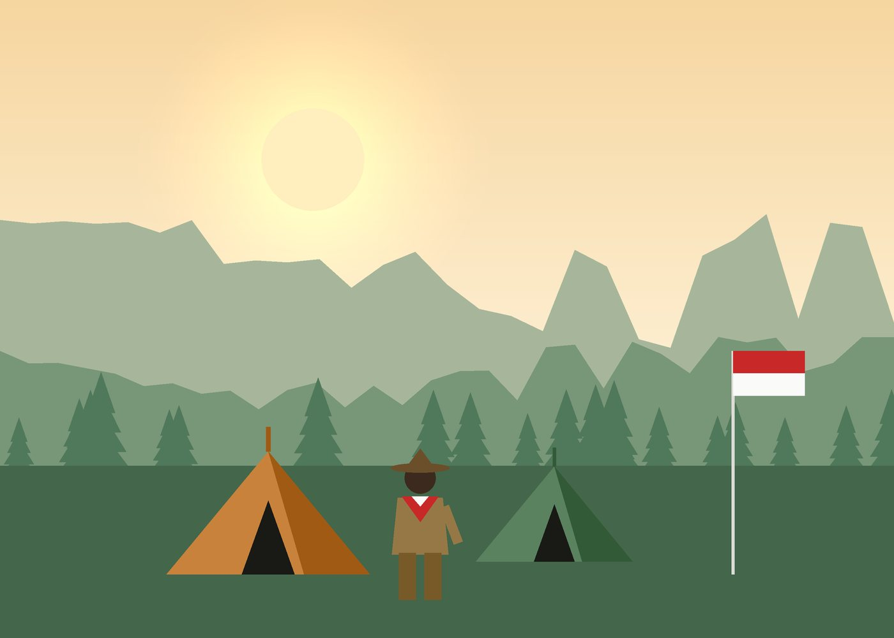

Kak Nama Pembina
Pembina Gugus Depan
Pembina Penggalang · KMD
Profil Gugus Depan
Mengenal sejarah, visi-misi, dan kakak-kakak pembina yang menemani setiap langkah petualangan.

Tentang kami
Gugus depan kami berpangkalan di sekolah dan aktif membina peserta didik dari golongan Siaga, Penggalang, hingga Penegak. Latihan rutin digelar setiap pekan dengan metode belajar sambil melakukan.
Kami percaya kemandirian, kepedulian, dan keberanian tumbuh dari pengalaman nyata: berkemah, menjelajah, menolong sesama, dan bekerja sama dalam regu.
Arah kami
Menjadi gugus depan yang melahirkan generasi berkarakter, berjiwa Pancasila, terampil, dan siap mengabdi bagi masyarakat.
Perjalanan
Dimulai dari satu pasukan penggalang dengan 24 anggota dan dua orang pembina.
Anggota yang beranjak dewasa melanjutkan pembinaan di ambalan penegak.
Regu putra dan putri membawa pulang piala bergilir tingkat kabupaten.
Pendaftaran, agenda, dan dokumentasi kegiatan kini bisa diakses lewat website ini.
Kakak pembina
Pembina, pelatih, dan dewan ambalan yang menyiapkan latihan dan kegiatan setiap pekan.
Pembina Gugus Depan
Pembina Penggalang · KMD
Daftar pembina dan dewan akan segera diumumkan.